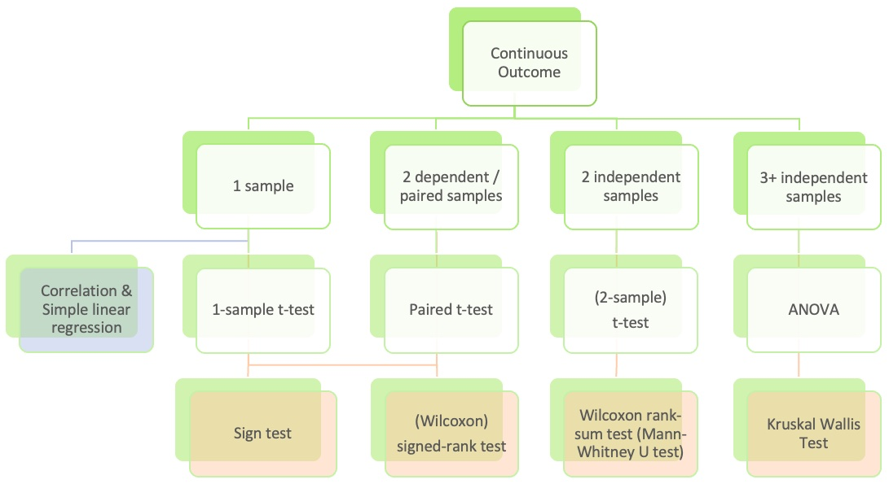
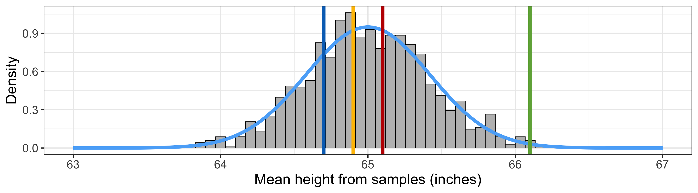
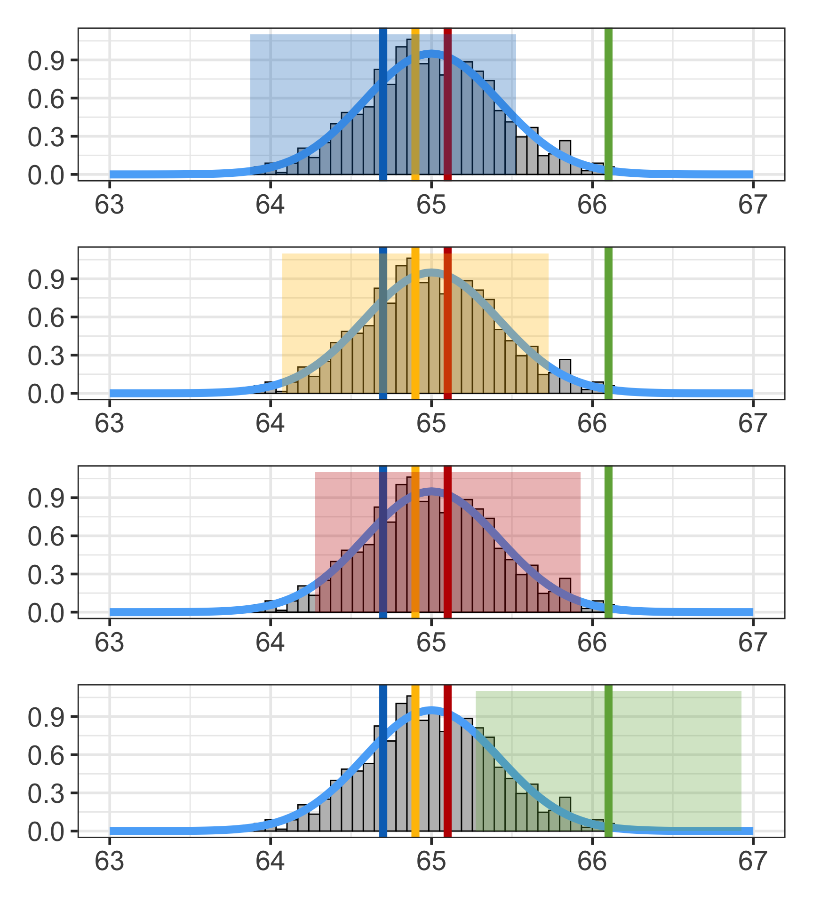
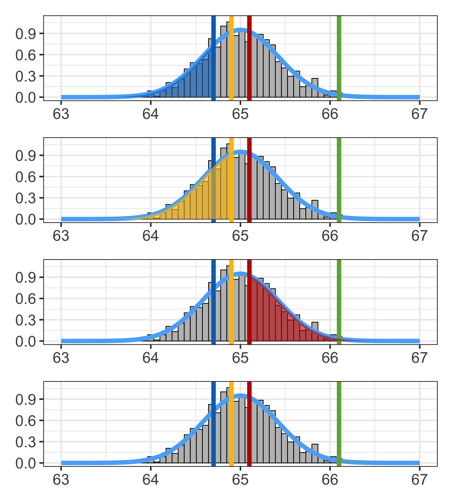
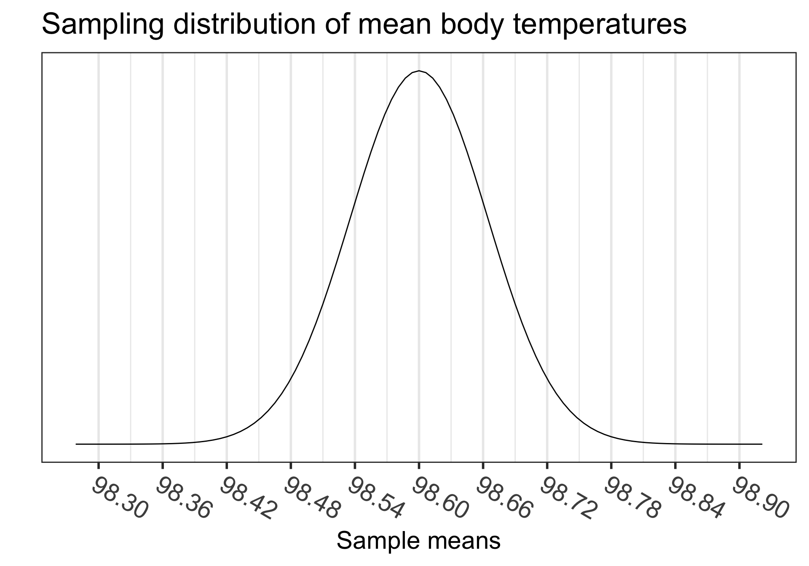
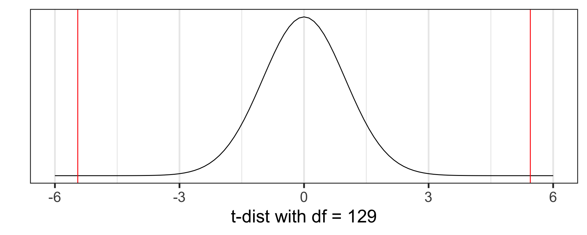

Lesson 11: Hypothesis Testing 1: Single-sample mean
TB sections 4.3, 5.1
Where are we?

Where are we? Continuous outcome zoomed in

Learning Objectives
- Understand the relationship between point estimates, confidence intervals, and hypothesis tests.
- Determine if s single-sample mean is different than a population mean using a hypothesis test.
- Use R to calculate the test statistic, p-value, and confidence interval for a single-sample mean.
Learning Objectives
- Understand the relationship between point estimates, confidence intervals, and hypothesis tests.
- Determine if s single-sample mean is different than a population mean using a hypothesis test.
- Use R to calculate the test statistic, p-value, and confidence interval for a single-sample mean.
Answering a research question
Research question is a generic form: Is there evidence to support that the population mean is different than \(\mu\)?
Two approaches to answer this question:
Confidence interval
- Create a confidence interval (CI) for the population mean \(\mu\) from our sample data and determine whether a prescribed value is inside the CI or not.
- Answering the question: is \(\mu\) a plausible value given our data?
Hypothesis test
- Run a hypothesis test to see if there is evidence that the population mean \(\mu\) is significantly different from a prescribed value
- This does not give us a range of plausible values for the population mean \(\mu\).
- Instead, we calculate a test statistic and p-value
- See how likely we are to observe the sample mean \(\overline{x}\) or a more extreme sample mean assuming that the population mean \(\mu\) is a prescribed value
Last last time: Point estimates
Warning: Using `size` aesthetic for lines was deprecated in ggplot2 3.4.0.
ℹ Please use `linewidth` instead.Warning: The dot-dot notation (`..density..`) was deprecated in ggplot2 3.4.0.
ℹ Please use `after_stat(density)` instead.Warning: Removed 2 rows containing missing values or values outside the scale range
(`geom_bar()`).

Last time: Point estimates with their confidence intervals for \(\mu\)

Warning: Removed 2 rows containing missing values or values outside the scale range
(`geom_bar()`).
Removed 2 rows containing missing values or values outside the scale range
(`geom_bar()`).
Removed 2 rows containing missing values or values outside the scale range
(`geom_bar()`).
Removed 2 rows containing missing values or values outside the scale range
(`geom_bar()`).
Do these confidence intervals include \(\mu\)?
This time: Point estimates with probability assuming population mean \(\mu\)
Warning: Removed 2 rows containing missing values or values outside the scale range
(`geom_bar()`).
Removed 2 rows containing missing values or values outside the scale range
(`geom_bar()`).
Removed 2 rows containing missing values or values outside the scale range
(`geom_bar()`).
Removed 2 rows containing missing values or values outside the scale range
(`geom_bar()`).
Assuming the population mean is \(\mu\), what is the probability that we observe \(\overline{x}\) or a more extreme sample mean?
Last time: Confidence interval (CI) for the mean \(\mu\) (\(z\) vs. \(t\))
- In summary, we have two cases that lead to different ways to calculate the confidence interval
Case 1: We know the population standard deviation
\[\overline{x}\ \pm\ z^*\times \text{SE}\]
- with \(\text{SE} = \frac{\sigma}{\sqrt{n}}\) and \(\sigma\) is the population standard deviation
- For 95% CI, we use:
- \(z^* =\)
qnorm(p = 0.975)\(=1.96\)
- \(z^* =\)
Case 2: We do not know the population sd
\[\overline{x}\ \pm\ t^*\times \text{SE}\]
- with \(\text{SE} = \frac{s}{\sqrt{n}}\) and \(s\) is the sample standard deviation
- For 95% CI, we use:
- \(t^* =\)
qt(p = 0.975, df = n-1)
- \(t^* =\)
Poll Everywhere Question 1
This time: Hypothesis test (\(z\) vs. \(t\))
- We have two different distributions from which we run a hypothesis test
Case 1: We know the population standard deviation
We use a test statistic from a Normal distribution: \[z_{\overline{x}} = \dfrac{\overline{x} - \mu}{SE}\]
with \(\text{SE} = \frac{\sigma}{\sqrt{n}}\) and \(\sigma\) is the population standard deviation
Case 2: We do not know the population sd
We use a test statistic from a Student’s t-distribution: \[t_{\overline{x}} = \dfrac{\overline{x} - \mu}{SE}\]
with \(\text{SE} = \frac{s}{\sqrt{n}}\) and \(\sigma\) is the sample standard deviation
- This is usually the case in real life
Is 98.6°F really the mean “healthy” body temperature?
- We will illustrate how to perform a hypothesis test as we work through this example
- Where did the 98.6°F value come from?
- German physician Carl Reinhold August Wunderlich determined 98.6°F (or 37°C) based on temperatures from 25,000 patients in Leipzig in 1851.
- 1992 JAMA article by Mackowiak, Wasserman, & Levine
- They claim that 98.2°F (36.8°C) is a more accurate average body temp
- Sample: n = 148 healthy individuals aged 18 - 40 years
- Other research indicating that the human body temperature is lower
Question: based on the 1992 JAMA data, is there evidence to support that the population mean body temperature is different from 98.6°F?
Question: based on the 1992 JAMA data, is there evidence to support that the population mean body temperature is different from 98.6°F?
Two approaches to answer this question:
Confidence interval
- Create a confidence interval (CI) for the population mean \(\mu\) and determine whether 98.6°F is inside the CI or not.
- Answering the question: is 98.6°F a plausible value?
Hypothesis test
- Run a hypothesis test to see if there is evidence that the population mean \(\mu\) is significantly different from 98.6°F or not
- This does not give us a range of plausible values for the population mean \(\mu\).
- Instead, we calculate a test statistic and p-value
- See how likely we are to observe the sample mean \(\overline{x}\) or a more extreme sample mean assuming that the population mean \(\mu\) is 98.6°F
Approach 1: Create a 95% CI for the population mean body temperature
- Use data based on the results from the 1992 JAMA study
- The original dataset used in the JAMA article is not available
- However, Allen Shoemaker from Calvin College created a dataset with the same summary statistics as in the JAMA article, which we will use:
\[\overline{x} = 98.25,~s=0.733,~n=130\]
CI for \(\mu\): \[\begin{align} \overline{x} &\pm t^*\cdot\frac{s}{\sqrt{n}}\\ 98.25 &\pm 1.979\cdot\frac{0.733}{\sqrt{130}}\\ 98.25 &\pm 0.127\\ (98.123&, 98.377) \end{align}\]
Used \(t^*\) = qt(.975, df=129) = 1.979
Conclusion: We are 95% confident that the (population) mean body temperature is between 98.123°F and 98.377°F, which is discernably different than 98.6°F.
Approach 2: Hypothesis Test
From before:
- Run a hypothesis test to see if there is evidence that the population mean \(\mu\) is significantly different from 98.6°F or not.
This does not give us a range of plausible values for the population mean \(\mu\).
Instead, we calculate a test statistic and p-value
- to see how likely we are to observe the sample mean \(\overline{x}\)
- or a more extreme sample mean
- assuming that the population mean \(\mu\) is 98.6°F.
How do we calculate a test statistic and p-value?
- Use the sampling distribution and central limit theorem!!
- Focus on Case 2: we don’t know the population sd \(\sigma\)
Learning Objectives
- Understand the relationship between point estimates, confidence intervals, and hypothesis tests.
- Determine if s single-sample mean is different than a population mean using a hypothesis test.
- Use R to calculate the test statistic, p-value, and confidence interval for a single-sample mean.
Steps in a Hypothesis Test
Check the assumptions
Set the level of significance \(\alpha\)
Specify the null ( \(H_0\) ) and alternative ( \(H_A\) ) hypotheses
- In symbols
- In words
- Alternative: one- or two-sided?
Calculate the test statistic.
Calculate the p-value based on the observed test statistic and its sampling distribution
Write a conclusion to the hypothesis test
- Do we reject or fail to reject \(H_0\)?
- Write a conclusion in the context of the problem
Step 1: Check the assumptions
The assumptions to run a hypothesis test on a sample are:
- Independent observations: the observations were collected independently.
- Approximately normal sample or big n: the distribution of the sample should be approximately normal, or the sample size should be at least 30
- These are the criteria for the Central Limit Theorem in Lesson 09: Variability in estimates
In our example, we would check the assumptions with a statement:
- The individual observations are independent and the number of individuals in our sample is 130. Thus, we can use CLT to approximate the sampling distribution.
Step 2: Set the level of significance \(\alpha\)
Before doing a hypothesis test, we set a cut-off for how small the \(p\)-value should be in order to reject \(H_0\).
It is important to specify how rare or unlikely an event must be in order to represent sufficient evidence against the null hypothesis.
We call this the significance level, denoted by the Greek symbol alpha ( \(\alpha\) )
- Typically choose \(\alpha = 0.05\)
This is parallel to our confidence interval
- \(\alpha\) is the probability of rejecting the null hypothesis when it is true (it’s a measure of potential error)
- From repeated (\(1-\alpha\))% confidence intervals, we will have about \(\alpha\)% intervals that do not cover \(\mu\) even though they come from the distribution with mean \(\mu\)
Step 3: Null & Alternative Hypotheses (1/2)
In statistics, a hypothesis is a statement about the value of an unknown population parameter.
A hypothesis test consists of a test between two competing hypotheses:
- a null hypothesis \(H_0\) (pronounced “H-naught”) vs.
- an alternative hypothesis \(H_A\) (also denoted \(H_1\))
Example of hypotheses in words:
\[\begin{aligned} H_0 &: \text{The population mean body temperature is 98.6°F}\\ \text{vs. } H_A &: \text{The population mean body temperature is not 98.6°F} \end{aligned}\]- \(H_0\) is a claim that there is “no effect” or “no difference of interest.”
- \(H_A\) is the claim a researcher wants to establish or find evidence to support. It is viewed as a “challenger” hypothesis to the null hypothesis \(H_0\)
Step 3: Null & Alternative Hypotheses (2/2)
Notation for hypotheses
Hypotheses test for example
We call \(\mu_0\) the null value (hypothesized population mean from \(H_0\))
\(H_A: \mu \neq \mu_0\)
- not choosing a priori whether we believe the population mean is greater or less than the null value \(\mu_0\)
\(H_A: \mu < \mu_0\)
- believe the population mean is less than the null value \(\mu_0\)
\(H_A: \mu > \mu_0\)
- believe the population mean is greater than the null value \(\mu_0\)
- \(H_A: \mu \neq \mu_0\) is the most common option, since it’s the most conservative
Poll Everywhere Question 2
Step 4: Test statistic (& its distribution)
Case 1: We know the population standard deviation
We use a test statistic from a Normal distribution: \[z_{\overline{x}} = \dfrac{\overline{x} - \mu}{SE}\]
with \(\text{SE} = \frac{\sigma}{\sqrt{n}}\) and \(\sigma\) is the population standard deviation
Statistical theory tells us that \(z_{\overline{x}}\) follows a Standard Normal distribution \(N(0,1)\)
Case 2: We do not know the population sd
We use test statistic from Student’s t-distribution: \[t_{\overline{x}} = \dfrac{\overline{x} - \mu}{SE}\]
with \(\text{SE} = \frac{s}{\sqrt{n}}\) and \(\sigma\) is the sample standard deviation
Statistical theory tells us that \(t_{\overline{x}}\) follows a Student’s t distribution with degrees of freedom (df) = \(n-1\)
\(\overline{x}\) = sample mean, \(\mu_0\) = hypothesized population mean from \(H_0\),
\(\sigma\) = population standard deviation, \(s\) = sample standard deviation,
\(n\) = sample size
Step 4: Test statistic calculation
From our example: Recall that \(\overline{x} = 98.25\), \(s=0.733\), and \(n=130\)
The test statistic is:
\[t_{\overline{x}} = \frac{\overline{x} - \mu_0}{\frac{s}{\sqrt{n}}} = \frac{98.25 - 98.6}{\frac{0.73}{\sqrt{130}}} = -5.45\]
- Statistical theory tells us that \(t_{\overline{x}}\) follows a Student’s t-distribution with \(df = n-1 = 129\)

Step 5: p-value
The p-value is the probability of obtaining a test statistic just as extreme or more extreme than the observed test statistic assuming the null hypothesis \(H_0\) is true.
- The \(p\)-value is a quantification of “surprise”
- Assuming \(H_0\) is true, how surprised are we with the observed results?
- Ex: assuming that the true mean body temperature is 98.6°F, how surprised are we to get a sample mean of 98.25°F (or more extreme)?
- If the \(p\)-value is “small,” it means there’s a small probability that we would get the observed statistic (or more extreme) when \(H_0\) is true.

Step 5: p-value calculation
Calculate the p-value using the Student’s t-distribution with \(df = n-1 = 130-1=129\):
\[\text{p-value}=P(T \leq -5.45) + P(T \geq 5.45) = 2.410889 \times 10^{-07}\]
# use pt() instead of pnorm()
# need to specify df
2*pt(-5.4548, df = 130-1, lower.tail = TRUE)[1] 2.410889e-07
Step 6: Conclusion to hypothesis test
\[\begin{aligned} H_0 &: \mu = \mu_0\\ \text{vs. } H_A&: \mu \neq \mu_0 \end{aligned}\]- Need to compare p-value to our selected \(\alpha = 0.05\)
- Do we reject or fail to reject \(H_0\)?
If \(\text{p-value} < \alpha\), reject the null hypothesis
- There is sufficient evidence that the (population) mean body temperature is discernibly different from \(\mu_0\) ( \(p\)-value = ___)
- The average (insert measure) in the sample was \(\overline{x}\) (95% CI , ), which is discernibly different from \(\mu_0\) ( \(p\)-value = ____).
If \(\text{p-value} \geq \alpha\), fail to reject the null hypothesis
- There is insufficient evidence that the (population) mean body temperature is discernibly different from \(\mu_0\) ( \(p\)-value = ___)
- The average (insert measure) in the sample was \(\overline{x}\) (95% CI , ), which is not discernibly different from \(\mu_0\) ( \(p\)-value = ____).
Step 6: Conclusion to hypothesis test
\[\begin{aligned} H_0 &: \mu = 98.6\\ \text{vs. } H_A&: \mu \neq 98.6 \end{aligned}\]Recall the \(p\)-value = \(2.410889 \times 10^{-07}\)
Need to compare back to our selected \(\alpha = 0.05\)
Do we reject or fail to reject \(H_0\)?
Conclusion statement:
- Basic: (“stats class” conclusion)
- There is sufficient evidence that the (population) mean body temperature is discernibly different from 98.6°F ( \(p\)-value < 0.001).
- Better: (“manuscript style” conclusion)
- The average body temperature in the sample was 98.25°F (95% CI 98.12, 98.38°F), which is discernibly different from 98.6°F ( \(p\)-value < 0.001).
Poll Everywhere Question 3
Learning Objectives
- Understand the relationship between point estimates, confidence intervals, and hypothesis tests.
- Determine if s single-sample mean is different than a population mean using a hypothesis test.
- Use R to calculate the test statistic, p-value, and confidence interval for a single-sample mean.
Load the dataset
- The data are in a csv file called
BodyTemperatures.csv
library(here) # first install this packagehere() starts at /Users/wakim/Library/CloudStorage/OneDrive-OregonHealth&ScienceUniversity/Teaching/Classes/EPI_525_25F/EPI_525_25F_siteBodyTemps <- read.csv(here::here("data", "BodyTemperatures.csv"))
# location: look in "data" folder
# for the file "BodyTemperatures.csv"
glimpse(BodyTemps)Rows: 130
Columns: 3
$ Temperature <dbl> 96.3, 96.7, 96.9, 97.0, 97.1, 97.1, 97.1, 97.2, 97.3, 97.4…
$ Gender <int> 1, 1, 1, 1, 1, 1, 1, 1, 1, 1, 1, 1, 1, 1, 1, 1, 1, 1, 1, 1…
$ HeartRate <int> 70, 71, 74, 80, 73, 75, 82, 64, 69, 70, 68, 72, 78, 70, 75…t.test: base R’s function for testing one mean
- Use the body temperature example with \(H_A: \mu \neq 98.6\)
- We called the dataset
BodyTempswhen we loaded it
(temps_ttest <- t.test(x = BodyTemps$Temperature,
alternative = "two.sided", # default setting
mu = 98.6))
One Sample t-test
data: BodyTemps$Temperature
t = -5.4548, df = 129, p-value = 2.411e-07
alternative hypothesis: true mean is not equal to 98.6
95 percent confidence interval:
98.12200 98.37646
sample estimates:
mean of x
98.24923 Note that the test output also gives the 95% CI using the t-distribution.
tidy() the t.test output
- Use the
tidy()function from thebroompackage for briefer output in table format that’s stored as atibble - Combined with the
gt()function from thegtpackage, we get a nice table
tidy(temps_ttest) %>%
gt() %>%
tab_options(table.font.size = 40) # use a different size in your HW| estimate | statistic | p.value | parameter | conf.low | conf.high | method | alternative |
|---|---|---|---|---|---|---|---|
| 98.24923 | -5.454823 | 2.410632e-07 | 129 | 98.122 | 98.37646 | One Sample t-test | two.sided |
- Since the
tidy()output is a tibble, we can easilypull()specific values from it:
Using base R’s $
tidy(temps_ttest)$p.value [1] 2.410632e-07What’s next?
CI’s and hypothesis testing for different scenarios:
| Lesson | Section | Population parameter | Symbol (pop) | Point estimate | Symbol (sample) |
|---|---|---|---|---|---|
| 11 | 5.1 | Pop mean | \(\mu\) | Sample mean | \(\overline{x}\) |
| 12 | 5.2 | Pop mean of paired diff | \(\mu_d\) or \(\delta\) | Sample mean of paired diff | \(\overline{x}_{d}\) |
| 13 | 5.3 | Diff in pop means | \(\mu_1-\mu_2\) | Diff in sample means | \(\overline{x}_1 - \overline{x}_2\) |
| 15 | 8.1 | Pop proportion | \(p\) | Sample prop | \(\widehat{p}\) |
| 15 | 8.2 | Diff in pop prop’s | \(p_1-p_2\) | Diff in sample prop’s | \(\widehat{p}_1-\widehat{p}_2\) |
Reference: what does it all look like together?
Example of hypothesis test based on the 1992 JAMA data
Is there evidence to support that the population mean body temperature is different from 98.6°F?
- Assumptions: The individual observations are independent and the number of individuals in our sample is 130. Thus, we can use CLT to approximate the sampling distribution.
4-5.
- Set \(\alpha = 0.05\)
Hypothesis:
\[\begin{aligned} H_0 &: \mu = 98.6\\ \text{vs. } H_A&: \mu \neq 98.6 \end{aligned}\]
temps_ttest <- t.test(x = BodyTemps$Temperature, mu = 98.6)
tidy(temps_ttest) %>% gt() %>% tab_options(table.font.size = 36)| estimate | statistic | p.value | parameter | conf.low | conf.high | method | alternative |
|---|---|---|---|---|---|---|---|
| 98.24923 | -5.454823 | 2.410632e-07 | 129 | 98.122 | 98.37646 | One Sample t-test | two.sided |
- Conclusion: We reject the null hypothesis. The average body temperature in the sample was 98.25°F (95% CI 98.12, 98.38°F), which is discernibly different from 98.6°F ( \(p\)-value < 0.001).